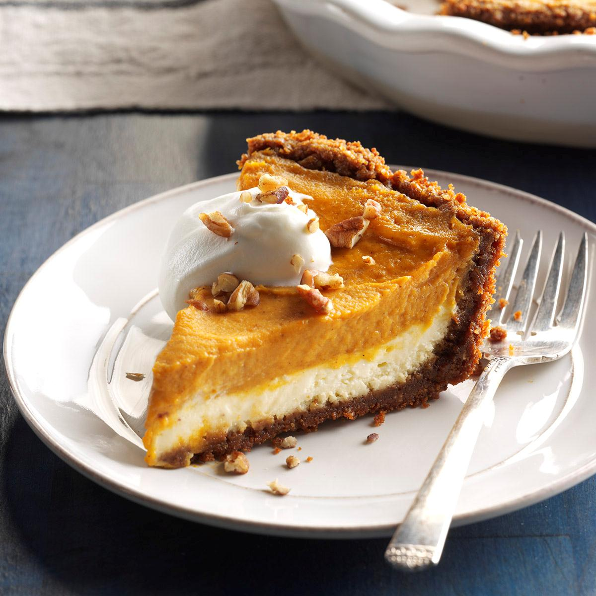

Double Layer Pumpkin Cheesecake

This pumpkin cheesecake is a great alternative to traditional cheesecake — especially for pumpkin pie fans! A thick, creamy cheesecake base topped with a layer of spiced pumpkin cheesecake filling sits on a graham cracker crust in this easy layered holiday dessert. Two flavors of cheesecake in every bite! Serve with a scoop of vanilla ice cream or a dollop of whipped cream.
Ingredients:
Cheesecake Layer
- 2 (8 ounce) packages cream cheese, softened
- 1⁄2 cup white sugar
- 1⁄2 teaspoon vanilla extract
- 2 large eggs
- 1 (9 inch) prepared graham cracker crust
Pumpkin Layer
- 1⁄2 cup pumpkin puree
- 1⁄2 teaspoon ground cinnamon
- 1 pinch ground cloves, or more to taste
- 1 pinch ground nutmeg, or more to taste
Directions:
- Preheat the oven to 325 degrees F (165 degrees C).
- Make cheesecake layer: Beat cream cheese, sugar, and vanilla in a large bowl with an electric mixer until smooth. Add eggs, one at a time, blending well after each addition.
- Spread 1 cup batter in the graham cracker crust.
- Make pumpkin layer: Add pumpkin puree, cinnamon, cloves, and nutmeg to the remaining batter; stir gently until well blended.
- Carefully spread on top of plain cheesecake batter in the crust.
- Bake in the preheated oven until the edges are puffed and the surface is firm except for a small spot in the center that jiggled when the pan is gently shaken, 35 to 40 minutes.
- Remove from the oven, set on a wire rack, and cool to room temperature, 1 to 2 hours.
- Refrigerate for at least 3 hours before serving, preferably overnight.
Return to Homepage.